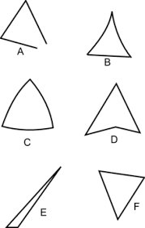
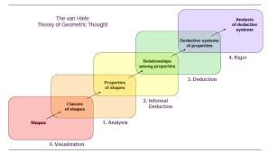
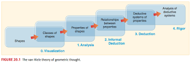
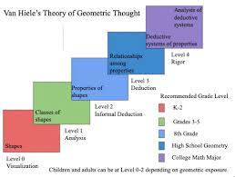
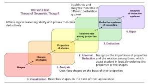

THE VAN HIELE'S THEORY OF GEOMETRIC THINKING
Abstract:.
The van Hiele theory describes how young people learn geometry.It postulates five levels of geometric thinking
which are
labeled visualization,
analysis, abstraction, formal deduction and rigor. Each level uses its own language and symbols. Students or pupils pass through the levels “step by step”.
This hierarchical order helps them to achieve better understanding and results. This article presents an overview of the model. It is focused on possibilities
how to apply this theory on mathematical education.
Introduction:
Pierre van Hiele and his wife Dina van Hiele-Geldof were Dutch researchers and teachers. They had personal experience with difficulties which their students
had in learning geometry. Therefore, they dealt with these problems in detail. The theory originated in their theses at the University of Utrecht in 1957.
Pierre van Hiele devoted his lifetime to their theory, Dina died shortly after completing her thesis.
Research based on the theory was carried out in the Soviet Union in the 1960s. Using its results, a very successful new geometry curriculum was designed
in the Soviet Union. American researchers did several large studies on the van Hiele theory in the late 1970s [Usiskin, 1982 and Senk, 1985].
These studies influenced American NCTM Standards and Common Core State Standards.
THE POSTULATES OF FIVE LEVELS OF GEOMETRIC THINKING
- Level 1 Visualization
- Level 2 Analysis
- Level 3 Abstraction
- Level 4 Deduction
- Level 5 Rigor
Level 1 Visualization (Basic visualization or Recognition)
At this level pupils use visual perception and nonverbal thinking. They recognize geometric figures by their shape as “a whole”
and compare the figures with their prototypes or everyday things (“it looks like door”), categorize them (“it is / it is not a…”).
They use simple language. They do not identify the properties of geometric figures.

Level 2 Analysis (Description)
At this level pupils (students) start analyzing and naming properties of geometric figures.
They do not see relationships between properties, they think all properties are important
(= there is no difference between necessary and sufficient properties). They do not see a need for proof of facts discovered empirically.
They can measure, fold and cut paper, use geometric software etc.
Level 3 Abstraction (Informal deduction or Ordering or Relational)
At this level pupils or students perceive relationships between properties and figures. They create meaningful definitions.
They are able to give simple arguments to justify their reasoning. They can draw logical maps and diagrams.
They use sketches, grid paper, geometric SW.
Level 4 Deduction (Formal deduction)
At this level students can give deductive geometric proofs. They are able to differentiate between necessary and sufficient conditions.
They identify which properties are implied by others. They understand the role of definitions, theorems, axioms and proofs.
Level 5 Rigor
At this level students understand the way how mathematical systems are established. They are able to use all types of proofs.
They comprehend Euclidean and non-Euclidean geometry. They are able to describe the effect of adding or removing an axiom on a given geometric system.
 
 
click here to read about bloom taxonomy